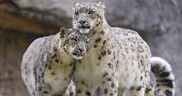
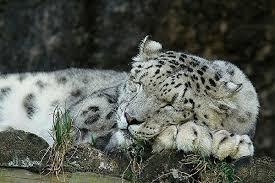

Самцы хищников немного крупнее самок. Характерная отличительная черта снежного барса – очень длинный толстый хвост (длина около 100 сантиметров), а также довольно короткие конечности с широкими лапами (длина задних стоп достигает 22-25 сантиметров). Следы лап большие и круглые, без различимых отметин от когтей.
Основной пищей ирбиса являются: сибирские горные козлы, маралы, олени, винторогие козлы, голубые бараны, косули, кабарги, архары, серау, горалы, гималайские тары, такины, кабаны. В голодные времена барсы охотятся и на более мелкую добычу, такую как: суслики, зайцы, пищухи, птицы (фазаны, кеклики, горные индейки).
 